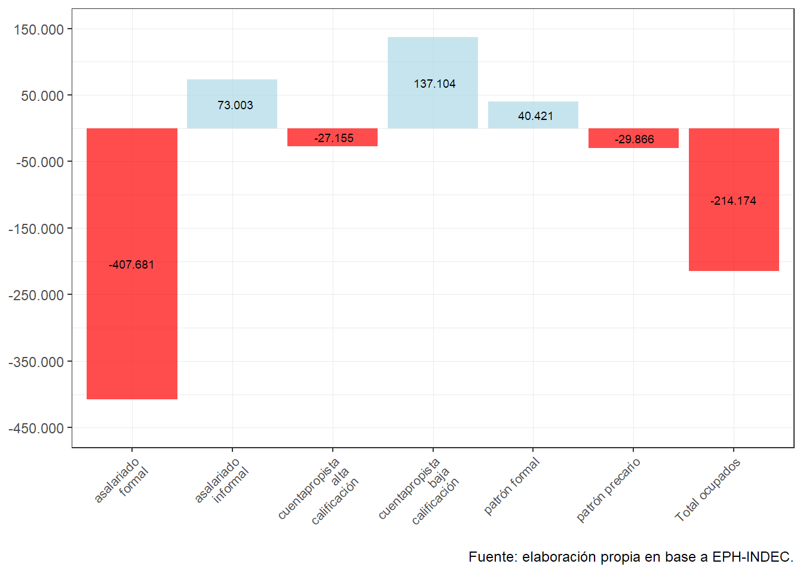
Resumen
El informe de noviembre de 2025 presenta un análisis detallado de la crisis laboral y social en Argentina, destacando un marcado proceso de precarización estructural que compromete la sostenibilidad del sistema previsional y las condiciones de vida de la mayoría de la fuerza laboral.
El mercado de trabajo argentino ha experimentado una transformación regresiva, evidenciada por la destrucción neta de 407 mil puestos de asalariados formales desde el cambio de gobierno, situando la proporción de asalariados formales en un mínimo histórico del 45% del total de ocupados. Paralelamente, se ha alcanzado un récord de informalidad laboral, afectando al 48% de los ocupados en el segundo trimestre de 2025. Nueve de cada diez nuevos puestos generados son precarios, lo que consolida una recomposición regresiva del empleo.
Este deterioro es un fenómeno generalizado en todo el territorio nacional, con las seis regiones registrando saldos negativos en empleo asalariado formal. El Gran Buenos Aires es la región más afectada, perdiendo 82.167 puestos. Además, se observa una transformación estructural en la matriz ocupacional: sectores productivos centrales como la industria manufacturera y la construcción experimentaron las contracciones más severas, mientras que ramas de menor productividad y mayor precariedad, como alojamiento y servicios de comidas, mostraron dinamismo.
La precariedad se traduce directamente en una insuficiencia de ingresos. Los trabajadores expulsados del sector formal se reinsertan en condiciones de alta vulnerabilidad con ingresos aproximadamente 50% inferiores a los asalariados formales. El 72% del total de ocupados percibe ingresos mensuales de 1 millón de pesos o menos, una cifra que se encuentra por debajo del valor de la Canasta Básica Total ($1.213.799 en octubre de 2025).
La crisis de ingresos ha consolidado el fenómeno del “trabajador pobre”. El 19% de quienes trabajan una jornada laboral completa de 40 horas semanales se encuentra por debajo de la línea de pobreza. Esta tasa se dispara al 41,3% para los asalariados informales con jornada completa, en contraste con el 10,5% de sus pares formales. La insuficiencia de ingresos también se refleja en el aumento del pluriempleo, que alcanza al 12% de los ocupados, demostrando que incluso los asalariados formales deben recurrir a ocupaciones adicionales para evitar la pobreza. En total, 9,7 millones de personas (el 67% de la Población Económicamente Activa) enfrentan problemas de empleo, ya sea por desocupación, subocupación o inserción en puestos precarios.
En términos de la evolución de la pobreza por ingresos, tras un pico del 55% al comienzo del mandato del gobierno de La Libertad Avanza, el indicador experimentó un fuerte descenso, alcanzando el 31,8%, un nivel similar a finales de 2018. Esta mejora se atribuyó fundamentalmente a la desaceleración de la inflación y al crecimiento relativo de los ingresos, especialmente en los trabajadores informales.
En relación a este punto, sobre que los ocupados informales de algunas ramas en particular son los que traccionaron la salida de la pobreza a partir de una mejora en sus ingresos laborales, es preciso destacar que se trata aun de ingresos muy bajos.
Los ocupados que más incrementaron sus ingresos laborales en este ultimo año fueron los de las ramas Alojamiento y servicio de comidas (quienes en promedio cobran 563 mil pesos mensuales y solo el 8% de ellos gana más de 1 millón de pesos mensuales), los de comercio (quienes en promedio cobran 648 mil pesos mensuales y solo el 12% de ellos gana más de 1 millón de pesos mensuales), los de construcción (quienes en promedio cobran 599 mil y solo el 8% de ellos gana más de 1 millón de pesos mensuales) y los de transporte que cobran 1,1 millones en promedio y solo el 29% de ellos gana más de 1 millón de pesos mensuales).
Se identificó un “Efecto freno” y “Efecto de Flexibilidad” donde los cuentapropistas (quienes pueden ajustar sus precios o tarifas con más agilidad que un asalariado formal) lograron mejorar su ingreso real relativo frente a la canasta básica durante la desaceleración inflacionaria. Esto resultó en una reducción de la pobreza entre los cuentapropistas no calificados (del 38,8% al 36%).
Respecto a las estrategias de los hogares para afrontar la crisis, el recurso a préstamos bancarios o financieros aumentó del 10% en el segundo trimestre de 2024 al 14% un año después, aunque la utilización de ahorros y préstamos familiares se mantiene constante.
El análisis de panel de hogares (2024-2025) reveló que los hogares que lograron salir de la pobreza lo hicieron principalmente mediante la ampliación de la cantidad de ocupados dentro del hogar (pluriempleo y más miembros trabajando) y una mejora sustancial en el ingreso per cápita familiar. Es significativo que estos hogares que salieron de la pobreza mantienen una fuerte presencia en la informalidad (51% del sostén principal).
El presente informe subraya que la precarización masiva del empleo compromete las condiciones de vida y erosiona la base contributiva previsional. Se requiere un esquema de crecimiento económico sostenido que reactive el consumo y la producción para generar empleo formal, en lugar de una reforma laboral regresiva que solo profundizaría la vulnerabilidad. La situación actual es análoga a un motor que pierde sus piezas esenciales (empleos formales de calidad) y solo puede reemplazarlas con partes temporales y de menor rendimiento (empleo precario), lo que inevitablemente compromete su capacidad de funcionamiento a largo plazo.
Empeoramiento de las inserciones laborales
Pérdida de puestos formales y aumento de la precarización
El mercado laboral argentino experimenta un marcado proceso de precarización estructural, evidenciado por la destrucción neta de 407 mil puestos de asalariados formales desde el cambio de gobierno, alcanzando el nivel más bajo registrado desde 2016 (Figura 1). En la actualidad (Figura 2), solo el 45% del total de ocupados corresponde a asalariados formales. Paralelamente, se observa un récord de informalidad laboral, que afecta al 48% de los ocupados, con niveles históricos en asalariados sin descuento jubilatorio (37,6%) y cuentapropistas de baja calificación (78,2%).
9 de cada 10 nuevos puestos generados son precarios
Este deterioro refleja una recomposición regresiva del empleo, en la cual 9 de cada 10 nuevos puestos generados son precarios. Los trabajadores expulsados del sector formal se reinsertan en condiciones de alta vulnerabilidad, con una pérdida sustancial de derechos laborales e ingresos significativamente menores (aproximadamente 50% inferiores a los de los asalariados formales), lo que incrementa su exposición a la pobreza, que afecta a cerca del 40% de este segmento. Además, esta transición hacia empleos informales compromete la sostenibilidad futura del sistema previsional. Un mercado laboral con alta informalidad erosiona la base contributiva, generando un déficit crónico que amenaza la viabilidad de las pensiones. Sin una masa crítica de cotizantes, el sistema enfrenta una crisis de legitimidad y financiamiento, hipotecando el futuro de las próximas generaciones de jubilados, sumado a ello la caída de la tasa de natalidad, y la performance negativa de la migración.
En términos netos, el período se caracteriza por una pérdida de 214 mil puestos de trabajo, en un contexto donde la creación de empleo se ha concentrado mayoritariamente en modalidades precarias: del total de 250 mil puestos generados, el 90% corresponde a empleos sin protección social ni estabilidad laboral.
Importante
¿Por qué es mala esta conversión? Además de la pérdida de derechos laborales que da el empleo protegido, los trabajadores precarios tienen ingresos laborales 50% inferiores a los asalariados formales y cerca del 40% son pobres.
El análisis diacrónico de la estructura ocupacional argentina (Figura 2) revela un proceso de “desformalización” progresiva y sostenida. La participación de los asalariados formales (la categoría que concentra los puestos de trabajo más protegidos y mejor remunerados) ha experimentado una contracción significativa, descendiendo del 51% en el segundo trimestre de 2016 a un mínimo histórico del 45% en el mismo período de 2025. Esta caída de 6 puntos porcentuales en nueve años consolida un cambio estructural en el mercado laboral, caracterizado por el avance relativo de modalidades más vulnerables, como el trabajo asalariado informal (que pasa del 25% al 27% del total de ocupados) y el cuentapropismo de baja calificación (que escaló del 16% al 19% en el mismo lapso). Este desplazamiento hacia inserciones laborales precarias no sólo erosiona los derechos de los trabajadores, sino que profundiza la desigualdad en la distribución de los ingresos intra asalariados.
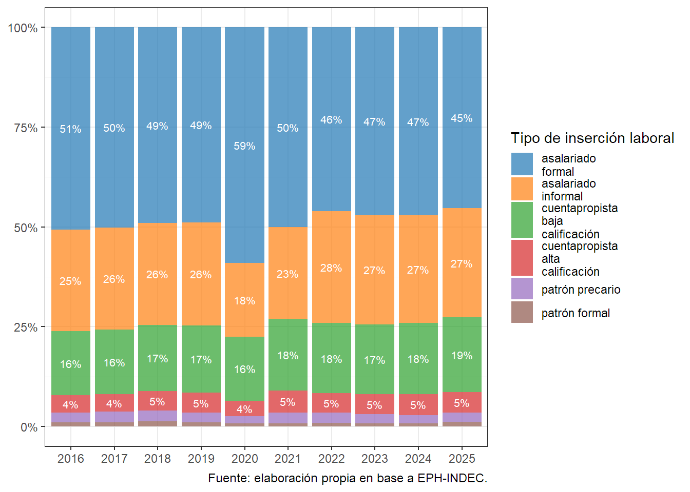
La evolución trimestral de la proporción de trabajadores precarios (Figura 3) consolida una trayectoria ascendente que culmina en el segundo trimestre de 2025 con un máximo histórico del 48,6%. Este registro no solo refleja un aumento de un punto porcentual respecto al valor de finales de 2023 (47,5%), sino que marca el nivel más elevado de la serie, confirmando una tendencia estructural de precarización laboral. Lejos de tratarse de una fluctuación coyuntural, la secuencia observada subraya el carácter persistente y agudizado de la informalidad y la vulnerabilidad en el mercado de trabajo argentino.
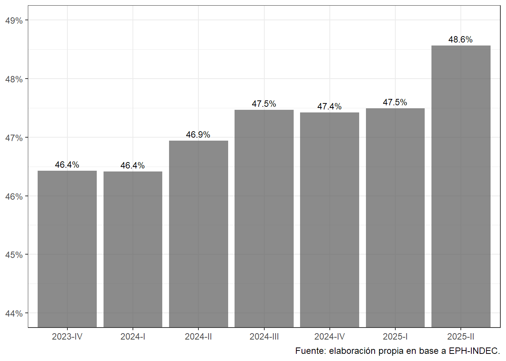
Saldo por región
El deterioro del empleo formal y el avance de la precarización constituyen un fenómeno generalizado en todo el territorio nacional. Las seis regiones del país registran saldos negativos en empleo asalariado formal, confirmando que la destrucción de puestos de trabajo protegidos y de calidad no se limita a zonas específicas, sino que es un patrón estructural que consolida un mercado laboral fragmentado y crecientemente desigual en todas las jurisdicciones. De acuerdo a la Figura 4, Gran Buenos Aires es la más afectada, con una pérdida de 82.167 puestos, lo que representa el epicentro de la contracción. Las regiones Noroeste (-21.599) y Noreste (-17.435) también muestran caídas severas.
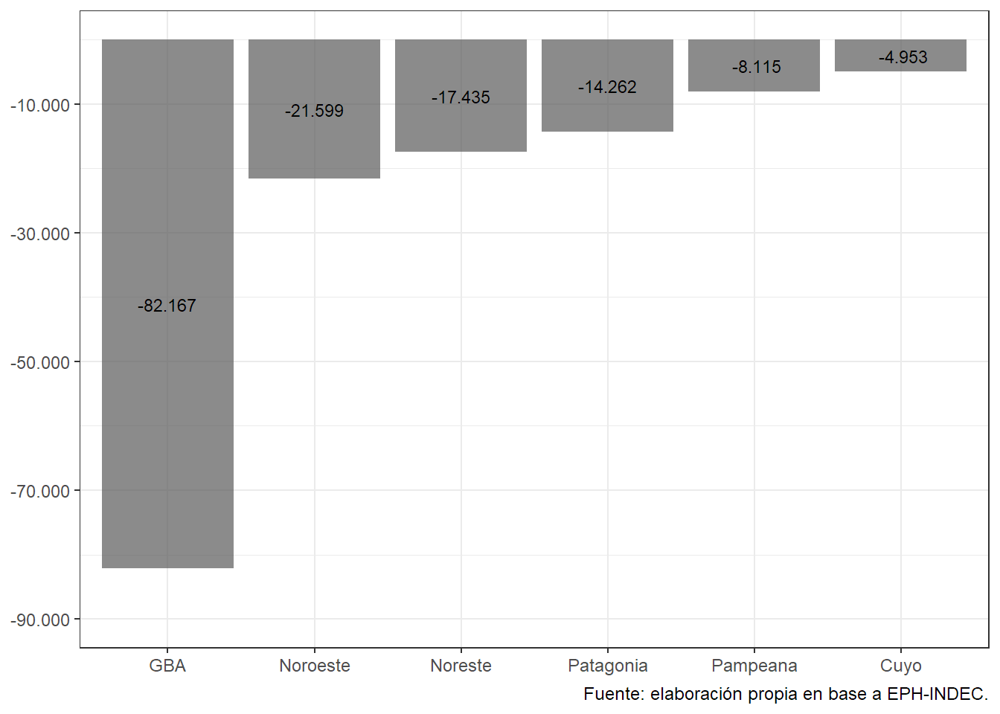
Pluriempleo y subocupación
La insuficiencia de los ingresos laborales se manifiesta en el aumento del pluriempleo (Figura 5), que alcanza al 12% de los ocupados (1,5 millones de personas), de los cuales 1 millón son Principal Sostén del hogar. Resulta significativo que la mitad de los pluriempleados son asalariados formales, lo que demuestra que incluso los trabajadores con empleos registrados perciben remuneraciones que no cubren sus necesidades básicas, viéndose forzados a recurrir a ocupaciones adicionales para complementar sus ingresos, profundizando así la sobreocupación y la precarización temporal, para evitar situaciones de pobreza.
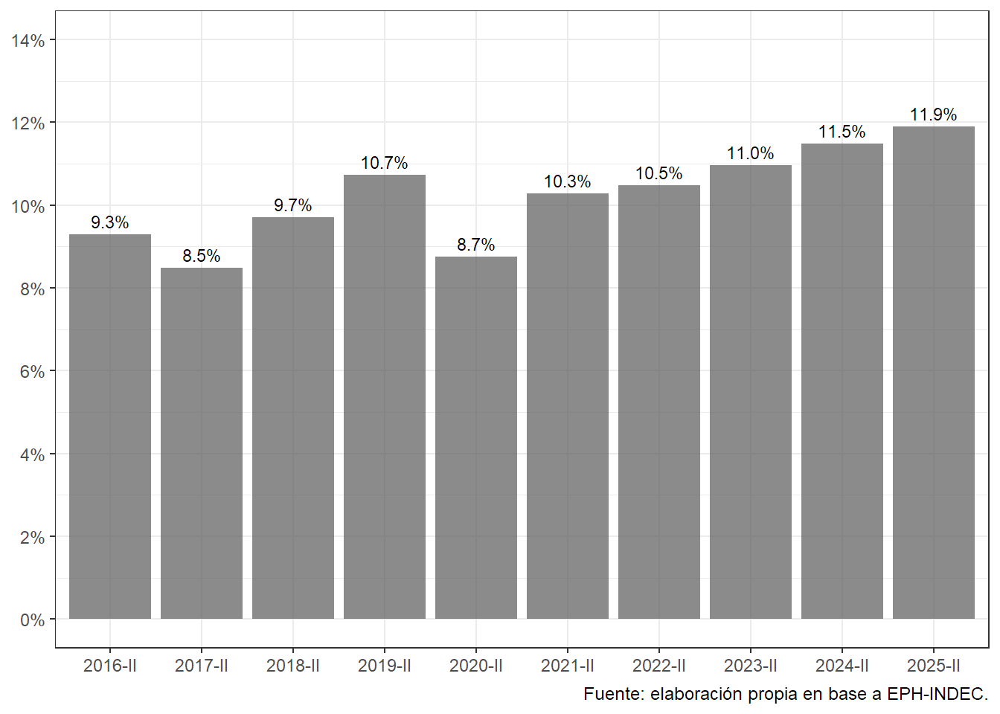
La serie de la subocupación demandante (trabajadores que trabajan menos de 35 horas semanales, desean trabajar más horas y están disponibles para hacerlo) muestra una tendencia al alza en el último trimestre, luego de un relativo descenso durante 2024.
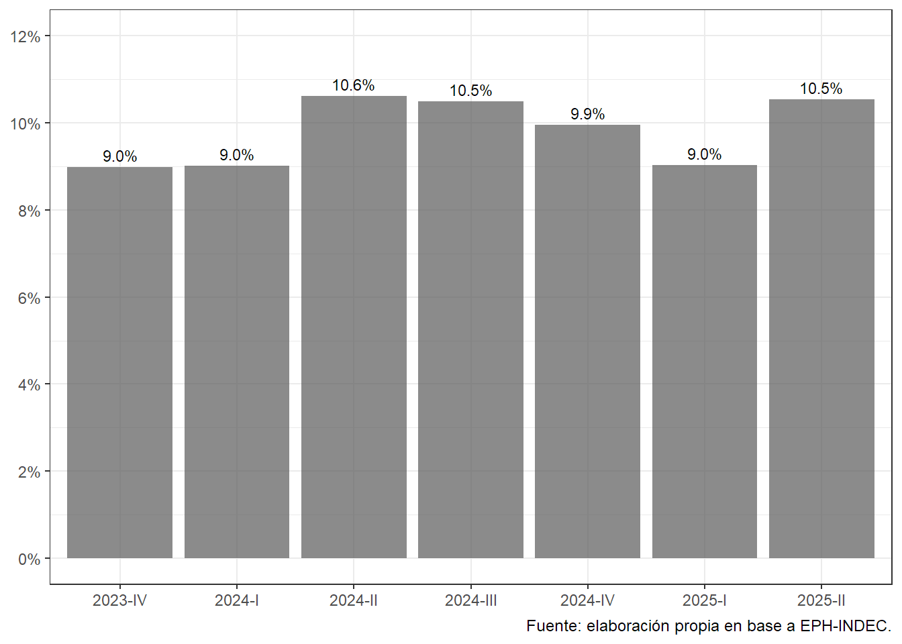
Crisis de ingresos
Menos del millón
7 de cada 10 ocupados en Argentina gana 1 millón de pesos o menos al mes
El análisis de los ingresos laborales según tipo de inserción ocupacional1 revela una situación crítica (Figura 7): el 72% del total de ocupados percibe ingresos mensuales de 1 millón de pesos o menos. Esta insuficiencia generalizada se agrava al contrastar con el valor de la Canasta Básica Total (CBT), que en octubre de 2025 ascendía a $1.213.799 para un hogar tipo de cuatro integrantes.
Casi parodiando la condición de los mileuristas europeos, en el caso de Argentina, privados de subsidios de alquiler y tarifas, es una situación de una precariedad extrema. Su ingreso, estático en un contexto inflacionario, bajo, pero con inflación, se ve devorado por un alquiler que absorbe una parte considerable de sus recursos, condenándolos a la pobreza residencial. Esta carga, sumada al encarecimiento continuo de alimentos y servicios, anula toda capacidad de ahorro. Cualquier imprevisto se transforma en una crisis insalvable, profundizando la incertidumbre. Sin colchón financiero, el acceso al crédito es nulo, bloqueando o dificultando cualquier proyecto de movilidad social como la compra de una vivienda o la capacitación profesional, y perpetuando un estado de mera subsistencia.
La brecha es aún más pronunciada en los sectores más precarizados: el 89% de los asalariados informales y el 88% de los cuentapropistas de baja calificación se encuentran en este segmento de ingresos insuficientes. Incluso dentro de los asalariados formales (el segmento mejor remunerado), el 58% no supera ese umbral, lo cual evidencia una crisis generalizada de ingresos que trasciende la informalidad y afecta la capacidad de amplios sectores de la población para cubrir sus necesidades básicas.
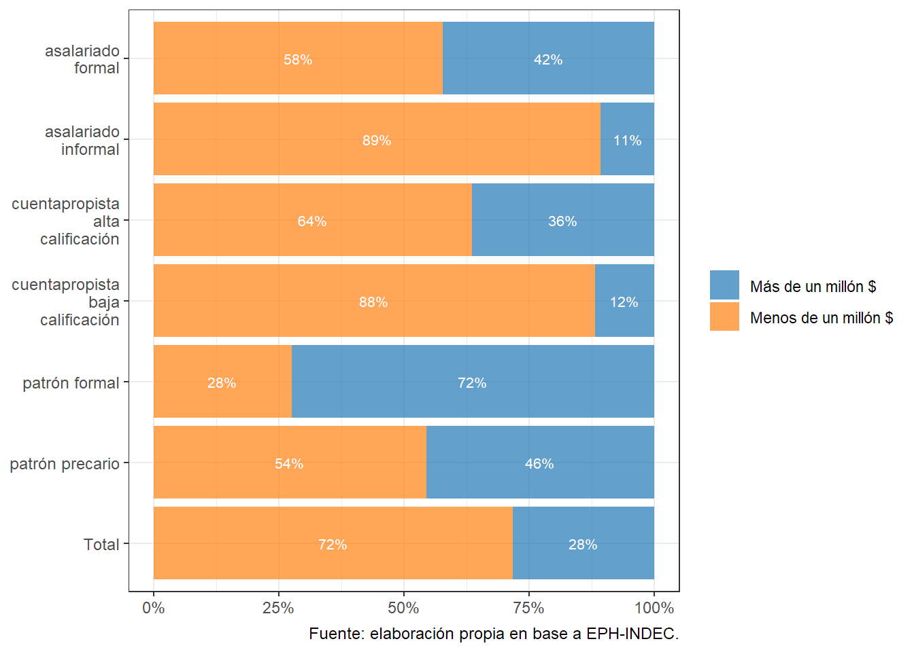
Ingresos laborales por tipo de ocupación y rama
La segmentación del mercado laboral se refleja nítidamente en los ingresos: asalariados informales y cuentapropistas precarios perciben ingresos mensuales 50% inferiores a los de los asalariados formales2. Esta brecha se acentúa en un contexto de precarización incluso de los puestos de alta calificación, donde la proporción de asalariados formales cayó del 70% al 62%, mientras que los informales en ese segmento subieron del 10% al 16%, evidenciando el deterioro en las condiciones de empleo incluso para trabajadores en puestos calificados.
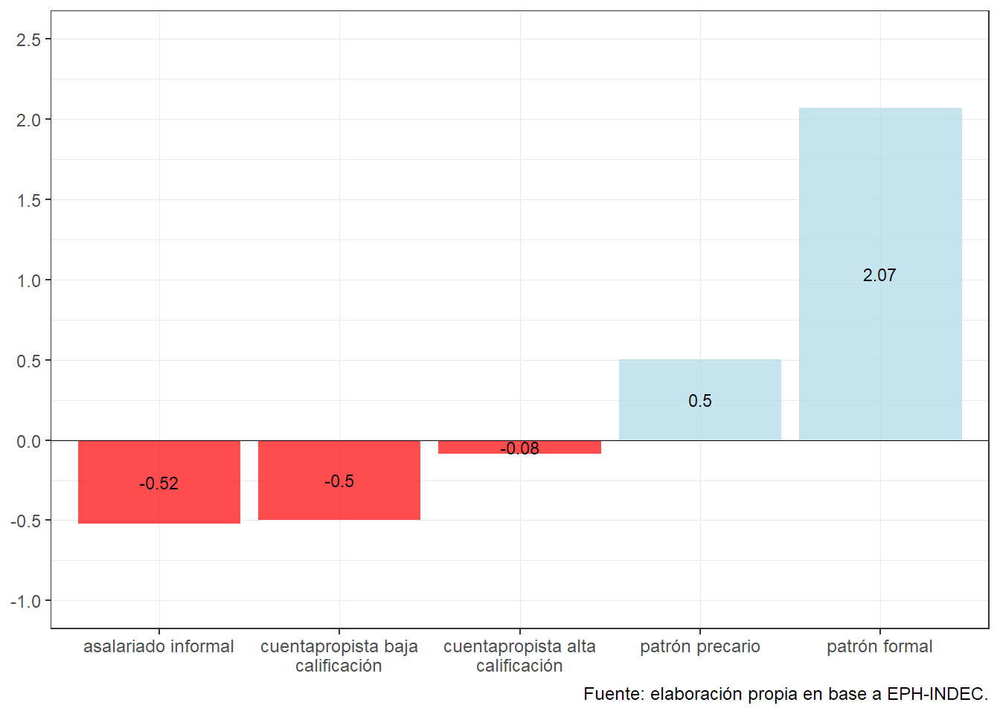
Cae el empleo Industrial y crecen ramas precarias
La comparación entre 2023 y 2025 del empleo asalariado revela una transformación estructural (Figura 9). Dos sectores productivos centrales como la industria manufacturera y la construcción experimentaron las contracciones más severas, con una pérdida neta de 192.849 y 112.708 puestos asalariados, respectivamente. Esta caída representa no sólo un deterioro cuantitativo, sino un cambio cualitativo en la matriz ocupacional, dado que se trata de ramas con mayor productividad, encadenamientos productivos extensos y capacidad de generar empleo de calidad con protección social.
Este colapso del empleo industrial y de la construcción contrasta con el dinamismo de sectores de menor productividad y mayor precariedad, como alojamiento y servicios de comidas, que creció en 117.002 puestos, y comercio, que sumó 95.566 asalariados. En este sentido, el patrón que emerge consolida una reestructuración regresiva en la que se destruyen empleos en actividades estratégicas y se expanden aquellos en ramas caracterizadas por salarios más bajos, alta rotación y menores requisitos de calificación, profundizando la fragmentación del mercado de trabajo y comprometiendo las bases del desarrollo económico de mediano plazo.
Una mención aparte debe hacerse para la situación de los trabajadores de la administración pública. Entre finales de 2023 y mediados de 2025 se perdieron 216.219 puestos de trabajo, siendo el sector más afectado por las políticas de ajuste fiscal.
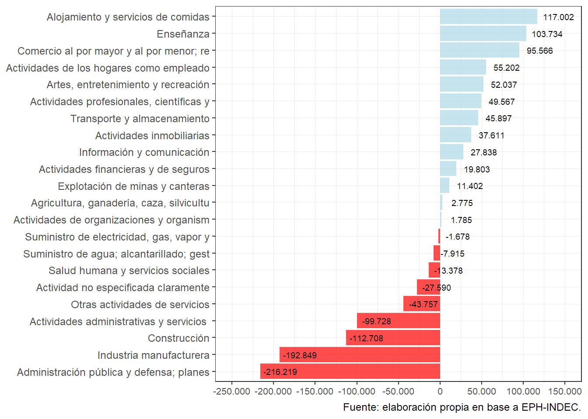
Población con problemas de empleo
2 de cada 3 personas tienen problemas de empleo
La magnitud de la crisis estructural del mercado laboral argentino se sintetiza en el hecho de que, para el segundo trimestre de 2025, 9,7 millones de personas (el 67% de la Población Económicamente Activa) enfrentan problemas de empleo (Figura 10). Esta cifra, que equivale a afirmar que 2 de cada 3 integrantes de la fuerza laboral no acceden a un empleo pleno, protegido y digno, no solo refleja un pico en la serie histórica, sino que consolida una tendencia de largo plazo: desde 2016, la proporción de trabajadores en esta situación se ha mantenido persistentemente por encima del 65%, poniendo de manifiesto el carácter estructural del problema.
La composición de este grupo es reveladora de las múltiples dimensiones de la precariedad. El indicador aglutina no solo a los 1,08 millones de desocupados, sino también a una vasta población ocupada que sufre subocupación, sobreocupación forzada o pluriempleo o se desempeña en empleos precarios y mal remunerados (asalariados informales, cuentapropistas y patrones precarios). Esta amplia categoría da cuenta de un mercado laboral fragmentado, donde la insuficiencia de ingresos y la falta de derechos laborales afectan a la mayoría de la fuerza de trabajo3.
Un análisis sociodemográfico de este conglomerado permite identificar los rostros de la precarización: si bien la mayoría son varones (58%), la distribución geográfica se concentra en la región del Gran Buenos Aires (53%) y la región pampeana (22%), lo que subraya la centralización territorial del problema. Resulta particularmente significativo que el 15% de estos trabajadores posee nivel educativo superior completo, un dato que desmiente la noción de que la precariedad es un fenómeno que afecta exclusivamente a los segmentos de baja calificación. En términos sectoriales, el problema se concentra en ramas de baja productividad y alta informalidad: Comercio (24%), Construcción (12%) y Servicio Doméstico (9%).
La persistencia de este elevado nivel de personas con problemas de empleo indica un fallo estructural en la generación de empleo de calidad. Lejos de ser un fenómeno meramente coyuntural, se consolida así un escenario de precarización masiva que compromete las condiciones de vida presentes y futuras de la población trabajadora, erosionando la base fiscal y profundizando las desigualdades sociales.
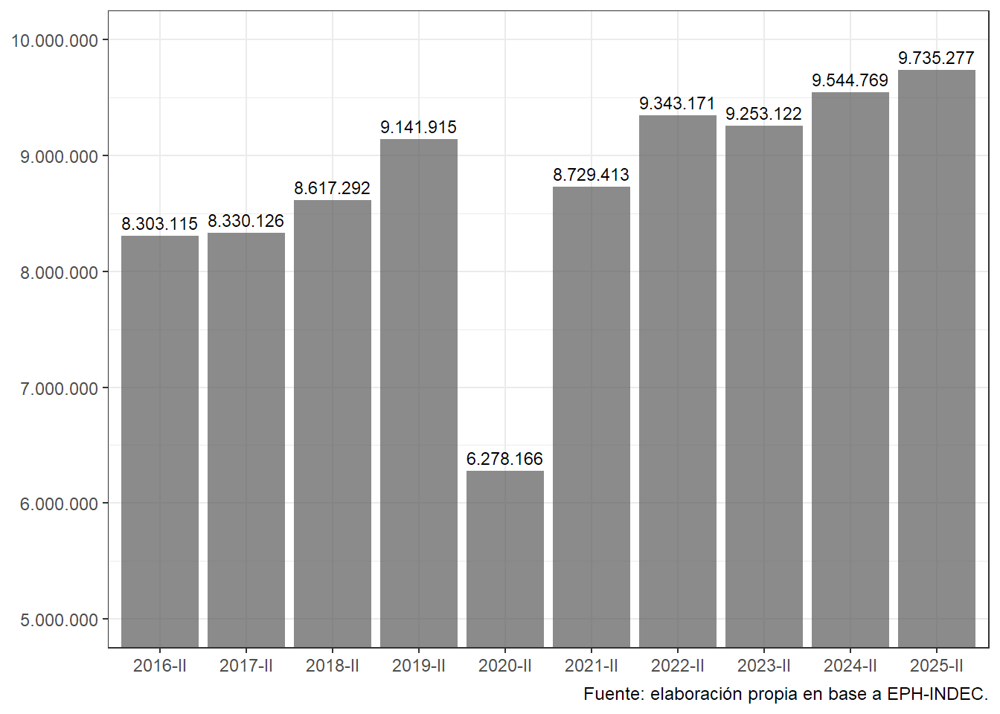
Pobreza
Tendencias generales
Al analizar la evolución de la pobreza por ingresos en informes anteriores, hemos destacado el desafío que enfrentaron sucesivos gobiernos en la última década para concluir sus mandatos con un nivel de pobreza más bajo que el del período previo.
En este contexto, la administración de La Libertad Avanza ha mostrado una dinámica particular: tras generar, con sus políticas iniciales, el aumento de la pobreza al 55%, el indicador experimentó un marcado descenso, situándose en 31,8%. Esta mejora parece explicarse principalmente por la combinación de dos factores: la fuerte desaceleración inflacionaria y la recuperación relativa de los ingresos en el sector laboral informal.
Como resultado, los niveles de pobreza actuales se ubicarían en rangos similares a los registrados a fines de 2018.
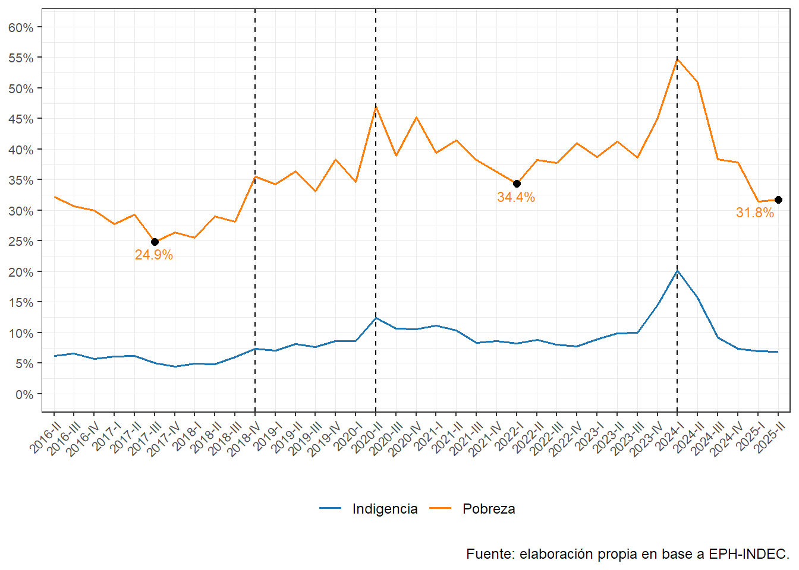
Pobreza en la Ciudad de Buenos Aires
Por último, hemos realizado un ejercicio comparativo para la Ciudad Autónoma de Buenos Aires utilizando las bases usuarias de la Encuesta de Ocupación, Trabajo e Ingresos (ETOI) del Instituto de Estadísticas y Censos (IDECBA). Se han calculado tanto las canastas de pobreza e indigencia que elabora dicho Instituto y las del INDEC (para GBA). A diferencia del INDEC, el Instituto de Estadísticas y Censos de la Ciudad Autónoma de Buenos Aires (IDECBA) desde 2022, actualiza la CBA y la CBT a través de un IPC propio que toma como ponderadores de referencia a la estructura de gastos derivada de la ENGHo 2017-2018. En este sentido, las canatas del IDECBA serían más cercanas a la estructura de consumo actual.
Como hemos presentado en el informe anterior, la evolución de la pobreza en la Ciudad muestra una misma tendencia tanto utilizando una como otra metodología, si bien la brecha entre ambas se exacerba a partir del primer trimestre de 2024. Por otro lado, lo que se observa es que utilizando la línea de pobreza de la Ciudad (CBT IDECBA) la tendencia mostraría un relativo incremento de la misma entre el primer y segundo trimestre de 2025 (Figura 16).
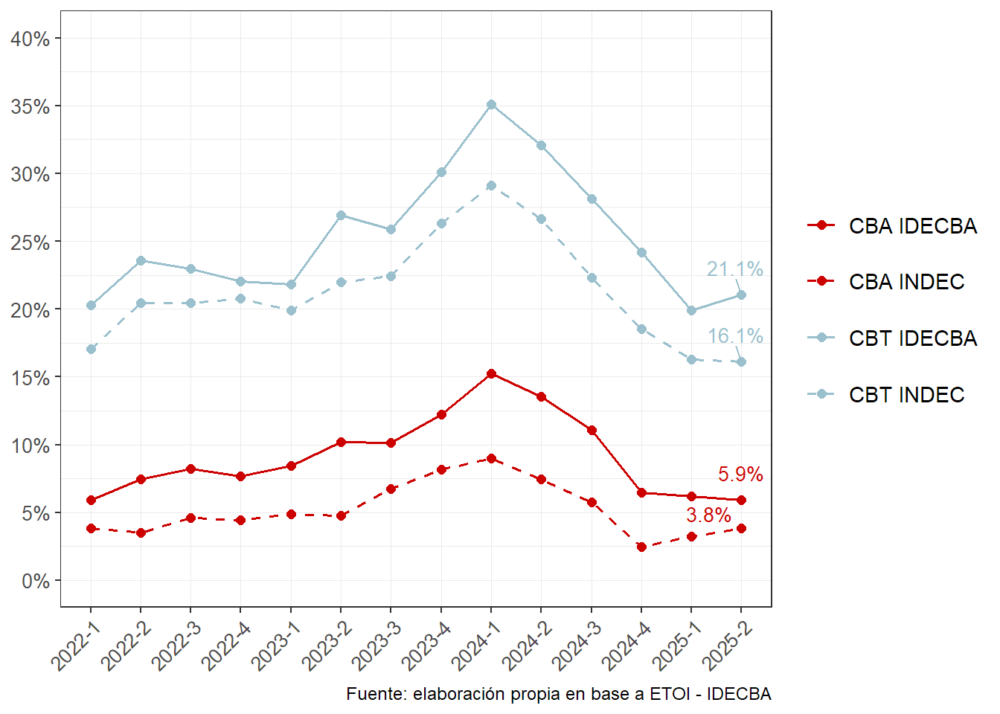
Evolución de ingresos
Ingresos en trabajadores informales
Haciendo foco en los trabajadores informales, y específicamente, en las 10 ocupaciones que concentran casi el 80% del total de dicho segment, encontramos que los trabajos con ocupaciones vinculadas a los servicios gastronómicos fueron los que mejor desempeño han tenido en sus ingresos entre el segundo trimestre de 2024 y 2025 (Figura 18). El resto de las ocupaciones tuvieron una mejora algo superior a la experimentada por el promedio del mundo laboral (32%): ocupaciones del transporte (44%), construcción (42%), pequeños directivos (39%), ocupaciones de cuidado (37%), comerciantes (35%) y ocupaciones de reparación de bienes (33%). Las únicas ocupaciones que se encontraron por debajo del promedio fueron las empleadas domésticas, los trabajadores industriales y, muy por debajo, los trabajadores de limpieza no domésticos.
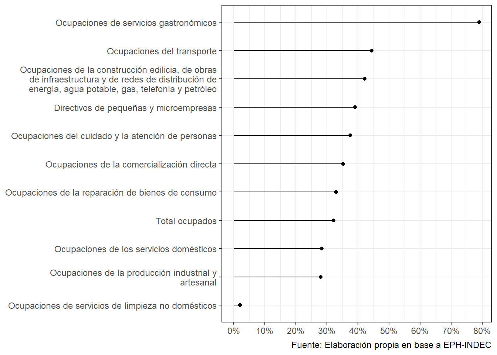
Ingresos según rama de actividad
Si observamos al conjunto de los ocupados según la rama de actividad en la que se insertan encontramos que la explotación de minas y canteras4 es el único sector que duplica y más a los ingresos promedio del resto de las actividades (Figura 19). Luego, únicamente los sectores de información / comunicación y financieros tienen trabajadores que superan en sus ingresos mensuales el millón de pesos.
Para el resto de las actividades, en naranja hemos identificado a las que tienen una mayor participación en la población ocupada total, siendo únicamente la rama de transporte, salud y administración pública las que tienen ingresos mensuales cercanos al millón de pesos. El resto de las ramas de actividad más representativas del mundo laboral presentan una dispersión de ingresos que oscila entre dicha cifra y los $500.000.
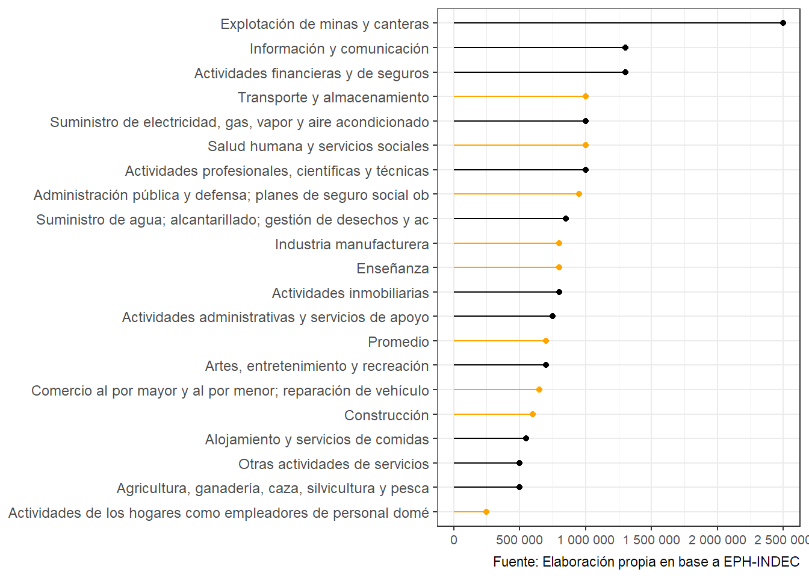
Estrategias de los hogares
Estrategias económicas familiares
El estudio de las estrategias de los hogares permite una comprensión del modo en que las familias hacen uso de determinadas prácticas y recursos para reproducir o modificar sus condiciones de vida. Como hemos analizado en el informe anterior, el principal recurso al que los hogares recurrieron luego de la devaluación de finales de 2023 fue la utilización de ahorros familiares (Figura 20). Si bien se observa un descenso (35% de los hogares utilizan ahorros), los niveles se mantienen por encima de lo evidenciado en años anteriores.
La necesidad de recurrir a préstamos de amigos o familiares también se mantiene constante en los últimos trimestres, cercano al 15% de los hogares. Sin embargo, se aprecia un aumento en la necesidad de recurrir a préstamos bancarios o financieros: mientras que en el segundo trimestre de 2024 un 10% de los hogares recurrían a este tipo de financiamiento, luego de un año dicha proporción aumentó al 14%.
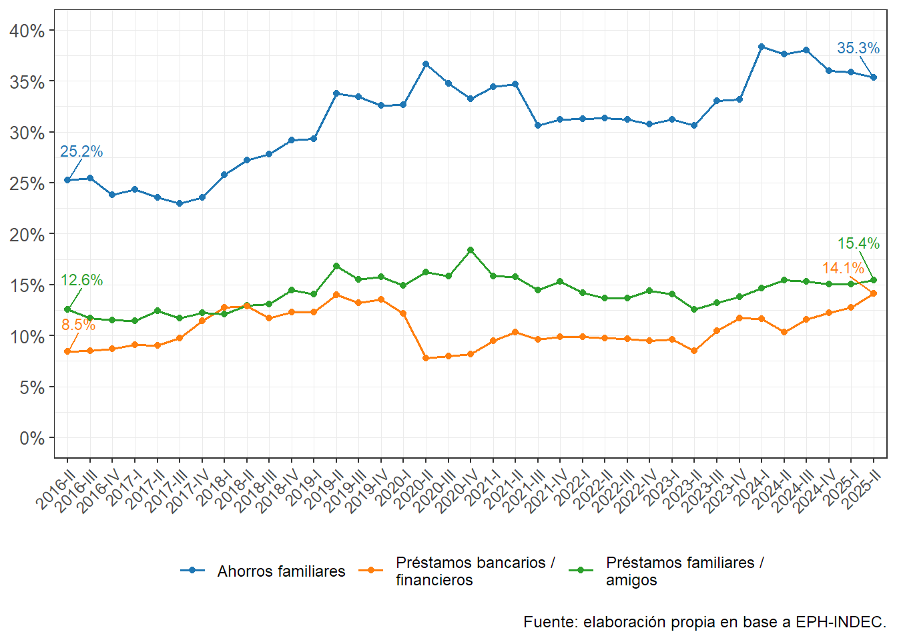
Análisis de panel
El otro ejercicio que realizamos para identificar las distintas estrategias implementadas por los hogares es el seguimiento del panel de encuestados entre el primer semestre de 2024 y 2025. Específicamente, analizamos las características que presentan los hogares según las transiciones que experimentan en el tiempo: aquellos que se mantienen en la pobreza, aquellos que salen de la pobreza, aquellos que ingresan en la pobreza y aquellos que nunca pasan por dicha condición.
Los hogares que han salido de la pobreza en el período interanual tienen las siguientes características:
Son los que más han ampliado en el tiempo la cantidad de ocupados dentro del hogar, aumentando en promedio 0,21, aunque han disminuido la cantidad de horas trabajadas.
Al mismo tiempo, con diferencias menores entre los distintos grupos, el conjunto de hogares que salió de la pobreza también aumentó la cantidad de empleos, es decir que los miembros han adicionado trabajos secundarios.
El principal factor de diferenciación radica en la mejora interanual en el ingreso per cápita familiar. El grupo que sale de la pobreza, en promedio, aumenta sus ingresos reales en casi $300.000, casi el doble de lo que han mejorado los hogares que se mantienen por fuera de dicha condición.
Respecto al tipo de inserción laboral estos hogares se caracterizan por una fuerte presencia en la informalidad (51% de los/las principal sostén del hogar presentan dicha condición).
Respecto al uso de recursos económicos (ahorros, préstamos familiares, bancarios, etc.) no se observan particularidades en este grupo, siendo mayor estas prácticas en todos los hogares que se encuentran o han estado en una situación de pobreza.
Finalmente, en términos de clase, este grupo tiene una composición algo más “balanceada” que el resto, con una importancia relativa de la clase de cuentapropistas calificados (principalmente de nivel técnico y operativo) y de trabajadores manuales de medianos y grandes establecimientos.
| Característica | No pobre - No pobre N = 4.6001 |
Pobre - Pobre N = 1.6361 |
Pobre - No pobre N = 1.7391 |
No pobre - Pobre N = 2641 |
|---|---|---|---|---|
| Sexo | ||||
| Varón | 2.481 (53,9%) | 787 (48,1%) | 895 (51,5%) | 139 (52,5%) |
| Mujer | 2.119 (46,1%) | 849 (51,9%) | 844 (48,5%) | 126 (47,5%) |
| Edad promedio | 47,58 (19,98) | 28,48 (13,13) | 37,21 (16,86) | 38,65 (17,69) |
| Rama de actividad | ||||
| Privado moderno | 607 (20,0%) | 105 (9,4%) | 119 (10,4%) | 18 (9,1%) |
| Privado tradicional | 1.403 (46,2%) | 901 (80,3%) | 789 (68,6%) | 126 (64,8%) |
| Público | 1.027 (33,8%) | 116 (10,3%) | 242 (21,0%) | 51 (26,0%) |
| Cantidad de ocupados adic. | -0,01 (0,49) | 0,01 (0,82) | 0,21 (0,68) | -0,30 (0,65) |
| Horas trabajadas adic. | 0,03 (17,05) | 1,24 (20,36) | -0,38 (16,91) | -5,92 (18,69) |
| Nº de empleos adic. | ||||
| Mantuvo misma cantidad | 2.173 (85,7%) | 733 (85,1%) | 879 (85,0%) | 107 (83,1%) |
| Aumentó la cantidad de empleos | 168 (6,6%) | 43 (5,0%) | 77 (7,5%) | 4 (3,0%) |
| Disminuyó la cantidad de empleos | 194 (7,7%) | 85 (9,9%) | 77 (7,5%) | 18 (13,9%) |
| Ingreso per cápita familiar | 162.983,78 (633.610,52) | 30.372,87 (81.818,44) | 297.540,12 (401.529,19) | -400.697,08 (866.544,74) |
| Condición de informalidad | ||||
| Informal | 855 (27,7%) | 872 (73,0%) | 622 (51,3%) | 94 (46,1%) |
| Formal | 2.233 (72,3%) | 323 (27,0%) | 590 (48,7%) | 110 (53,9%) |
| Tiene ahorros | ||||
| No uso ahorros | 2.025 (44,0%) | 767 (46,9%) | 713 (41,0%) | 88 (33,2%) |
| Uso ahorros | 2.575 (56,0%) | 869 (53,1%) | 1.026 (59,0%) | 177 (66,8%) |
| Préstamo bancario | ||||
| No uso préstamo bancario | 3.542 (77,0%) | 1.353 (82,7%) | 1.317 (75,7%) | 169 (64,0%) |
| Uso préstamo bancario | 1.058 (23,0%) | 282 (17,3%) | 422 (24,3%) | 95 (36,0%) |
| Préstamo familiar | ||||
| No uso préstamo familiar | 3.694 (80,3%) | 1.026 (62,7%) | 1.126 (64,7%) | 161 (61,1%) |
| Uso préstamo familiar | 906 (19,7%) | 610 (37,3%) | 613 (35,3%) | 103 (38,9%) |
| Clase social | ||||
| Propietarios y directivos >5 | 113 (2,5%) | 1 (0,1%) | 4 (0,2%) | 6 (3,1%) |
| Propietarios y directivos <=5 | 75 (1,7%) | 24 (1,7%) | 26 (1,6%) | 1 (0,6%) |
| Cuenta propia profesionales / calificados | 419 (9,3%) | 176 (12,0%) | 203 (12,2%) | 11 (5,2%) |
| Trabajadores no manuales >5 | 1.335 (29,5%) | 104 (7,1%) | 297 (17,9%) | 51 (24,9%) |
| Trabajadores manuales >5 | 520 (11,5%) | 245 (16,7%) | 257 (15,5%) | 19 (9,3%) |
| Trabajadores no manuales <=5 | 149 (3,3%) | 24 (1,6%) | 64 (3,8%) | 3 (1,5%) |
| Trabajadores manuales <=5 | 131 (2,9%) | 293 (19,9%) | 191 (11,5%) | 19 (9,0%) |
| Cuenta propia no calificados | 220 (4,9%) | 173 (11,8%) | 163 (9,8%) | 27 (13,2%) |
| Inactivos-jubilados | 1.135 (25,1%) | 80 (5,5%) | 247 (14,9%) | 21 (10,0%) |
| Inactivos-Otros | 431 (9,5%) | 351 (23,8%) | 210 (12,7%) | 48 (23,2%) |
| 1 n (%); Media (DE) | ||||
Conclusiones
El informe examina la crisis estructural del mercado laboral argentino, caracterizada por una marcada precarización del empleo y la consecuente insuficiencia de ingresos para la mayoría de la población. El análisis documenta la destrucción neta de 407 mil puestos asalariados formales, consolidando un récord histórico de informalidad que afecta a cerca del 48% de los ocupados. Este deterioro es transversal, observándose en todas las regiones y con una contracción severa en sectores clave como la industria, mientras crecen las ramas de baja productividad y menor protección social.
La crisis salarial es profunda, ya que siete de cada diez ocupados perciben ingresos insuficientes para cubrir la Canasta Básica Total, creando el fenómeno de los “trabajadores pobres”, incluso entre aquellos que cumplen jornadas completas. Aunque la pobreza experimentó una reducción reciente (alcanzando el 31.8%), esta mejora se atribuye al crecimiento relativo de los ingresos de los trabajadores por cuenta propia no calificados frente a la desaceleración inflacionaria.
Las estrategias de los hogares para salir de la pobreza se centran en el aumento de ocupados por familia y el pluriempleo, reforzando la dependencia del trabajo informal.
Notas
Se consideró la suma de ingresos laborales de todas las ocupaciones.↩︎
Si consideramos el salario horario, los asalariados informales y cuentapropistas precarios perciben ingresos laborales 40% inferiores a los asalariados formales.↩︎
Cabe destacar que no incluimos a demandantes de empleo, que están ocupados plenamente. Allí pueden encontrarse motivos diversos que no contempla la EPH: maltrato laboral, desacuerdo de credenciales educativas con la tarea, salarios fuera de las expectativas esperadas, transporte inadecuado, inseguridad de las condiciones logísticas del empleo, etc.↩︎
Cabe destacar que la rama minas y canteras, pese a ser una rama dinámica y con altos niveles de productividad genera una demanda de mano de obra muy baja. Del total de ocupados que hay en el país, esta rama emplea solamente al 0,3%↩︎